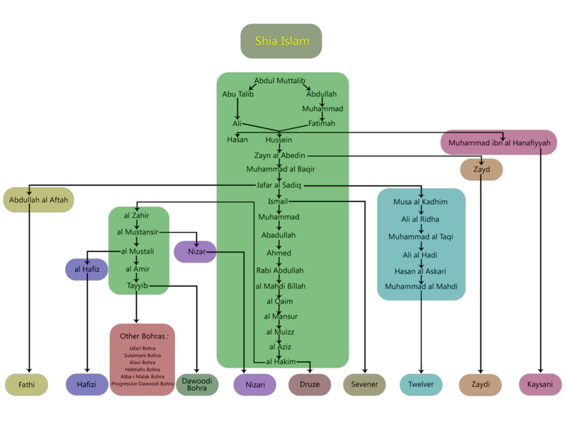

SEKTE-SEKTE ALIRAN SYI'AH
Perpecahan dalam kelompok Syi'ah itu terjadi lebih disebabkan oleh karena perbedaan prinsip keyakinan dalam persoalan imamah, yaitu pada pergantian imam. Kedudukan imam dalam Syi'ah menjadi sangat penting, karena tugas dan tanggung jawab seorang imam hamper sejajar dengan kedudukan Nabi. Imam bagi Syi'ah memiliki kewajiban menjelaskan makna Al-Qur'an, menjelaskan hukum syariat, mencegah perpecahan umat, menjawab segala persoalan agama dan teologi, menegakkan keadilan, mendidik umat dan melindungi wilayah kekuasaan. Perpecahan Syi'ah pertama terjadi setelah Hussain wafat di Padang Karbala, kelompok Syi'ah terpecah menjadi dua sekte, penyebabnya ialah karena Hussain tidak meninggalkan putra yang telah dewasa. Maka timbullah pertanyaan apakah putra yang belum dewasa berhak (sah) untuk menduduki jabatan imam. Golongan pertama mengatakan sah karena dalam keadaan darurat, sebab Ali bin Abi Thalib tidak meninggalkan putra atau keturunan lain dari garis keturunan Nabi melalui Fatimah dan golongan ini dinamakan golongan Imamiyah. Golongan kedua mengatakan tidak sah, oleh karena itu mereka mencari putra Ali ra yang lain yang telah dewasa, walaupun dalam diri orang itu tidak mengalir darah Nabi Muhammad SAW. Karena itu mereka menemukan putra Ali yang lain, yaitu Muhammad Ali Hanafiah putra dari kalangan Bani Hanafiah. Golongan ini dinamakan Kaisaniyah. Sekte Kaisaniyah selanjutnya tidak berkembang. Dari golongan ini dalam perjalanan sejarahnya berkembang menjadi beberapa sekte dan Syi'ah terpecah menjadi Syi'ah Imamiyah (Istna Asyariyah), Sab'iyah, Zaidiyah dan al-Ghaliyah (Ghulat).
- Syi'ah Istna Asyariyah atau Syi'ah Imam Dua Belas
Disebut sebagai Syi'ah Imam dua belas karena kelompok Syi'ah ini meyakini dua belas imam secara berurutan yaitu :
- Ali bin Abi Thalib
- Hasan bin Ali bin Abi Thalib
- Husein bin Ali bin Abi Thalib
- 'Ali Zaenal 'Abidin bin Husein bin 'Ali bin Abi Thalib
- Muhammad Al-Baqir bin Ali Zaenal Abidin
- Ja'far Shadiq bin Muhammad al-Baqir.
- Musa al-Kazim bin Ja'far Shadiq
- Ali ar-Ridha bin Musa Al-Kazhim
- Muhammad al- Jawwad bin 'Ali Ridha.
- Ali al -Hadi bin Muhammad bin Ali Ridha
- Hasan bin Ali bin Muhammad al-Askari.
- Muhammad bin Hasan al-Mahdi.
Pengikut sekte ini menganggap imam ke dua belas, Muhammad Al-Mahdi dinyatakan sebagai ghaibah, yakni ia bersembunyi di ruang bawah tanah rumah ayahnya di Samarra dan tidak kembali. Itulah sebabnya kembalinya Imam Al-Mahdi ini selalu ditunggu-tunggu pengikut Syi'ah Itsna Asy'Ariyah. Imam Al-Mahdi dijuluki sebagai Imam Mahdi Al-Muntazhar (yang ditunggu)
Di dalam sekte Itsna Asy'Ariyah dikenal konsep Ushul ad-Dhin yang menjadi akar atau pondasi agama, antara lain :
- Tauhid, yakni mereka percaya Allah SWT itu Esa.
- Keadilan, yakni mereka berkeyakinan bahwa Allah SWT maha Adil.
- Nubuwwah, yakni mereka percaya mutlak tentang ajaran tauhid dengan kerasulan sejak Nabi Adam hingga Nabi Muhammad Saw dan tidak ada nabi setelah Nabi Muhammad Saw.
- Ma'ad, yakni mereka mempercayai adanya hari kiamat untuk menghadapi pengadilan Allah SWT di akherat.
- Imamah
Selanjutnya dalam hal yang bersifat mahdhah, Syi'ah Itsna Asy'Ariyah berpijak pada delapan cabang agama yang disebut sebagai furu ad-din. Delapan cabang agama tersebut terdiri dari shalat, puasa, haji, zakat, khumus atau pajak sebesar 1/5 dari penghasilan, jihad, al-amr bi al-ma'ruf dan an-nahyu an al-munkar.
- Syi'ah Sab'iyah (Syi'ah tujuh)
Syi'ah Sab'iyah hanya mengakui tujuh imam diantaranya adalah sebagai berikut :
- Ali bin Abi Thalib
- Hasan bin Ali bin Abi Thalib
- Husein bin Ali bin Abi Thalib
- 'Ali Zaenal 'Abidin bin Husein bin 'Ali bin Abi Thalib
- Muhammad Al-Baqir bin Ali Zaenal Abidin
- Ja'far Shadiq bin Muhammad al-Baqir.
- Ismail bin Jafar
Syi'ah Sab'iyah disebut juga dengan Syi'ah Ismailliyah. Sekte ini meyakini bahwa Ismail, putra Imam Ja'far As-Shaddiq, adalah imam yang menggantikan ayahnya sebagai imam ke tujuh. Ismail sendiri telah ditunjuk oleh Ja'far Ash-Shiddiq, namun Ismail wafat mendahului ayahnya. Akan tetapi satu kelompok pengikut tetap menganggap Ismail adalah imam ketujuh. Syi'ah Ismailliyah ini pada masa-masa setelah Imam Ja'far mengalami banyak cabang, diantaranya : kelompok Druz. Ismailliyah Nizary, Musta'ly.
Syi'ah Sab'iyah percaya bahwa Islam dibangun atas tujuh pilar, antara lain iman, thaharah, sholat, zakat, puasa, dan jihad. Iman dirinci oleh Syi'ah Sab'iyah sebagai berikut : Iman kepada Allah, tiada tuhan selain Allah dan Muhammad utusan Allah, iman kepada surge, iman kepada neraka, iman kepada hari kebangkitan, iman kepada hari pengadilan, iman kepada para Nabi dan Rasul, iman kepada imam zaman.
Syarat-syarat imam dalam pandangan Syi'ah Sab'iyah adalah sebagai berikut :
- Imam harus berasal dari keturunan Ali melalui perkawinannya dengan Fatimah yang kemudian disebut dengan ahlul bait.
- Imam harus berdasarkan penunjukkan atau nash.
- Keimaman harus jatuh pada anak tertua.
- Imam harus ma'shum.
- Imam harus dijabat oleh seseorang yang paling baik yakni perbuatan dan ucapan imam tidak boleh bertentangan dengan syari'ah.
- Seorang imam harus mempunyai pengetahuan lahir dan batin.
- Syi'ah Zaidiyah
Setelah kematian Zaenal Abidin, sekte Zaidiyah terbentuk. Sekte ini mengusung Zaid sebagai imam kelima pengganti Ali Zaenal Abidin. Zaid sendiri adalah seorang ulama terkemuka dan guru dari Imam Abu Hanifah dan merupakan keturunan Ali bin Abi Thalib dari sanad Ali Zaenal Abidin bin Husain. Syi'ah Zaidiyah adalah sekte yang paling moderat dan dipandang paling dekat dengan Sunni atau aliran Ahlus Sunnah Wal Jama'ah.
Sekte Zaidiyah ini menolak paham bahwa seorang imam yang menjadi pemimpin penerus Nabi Muhammad Saw telah ditentukan oleh Nabi, tetapi menurutnya yang ditentukan itu hanya sifat-sifatnya saja. Menurut sekte ini, menjadi seorang imam itu paling tidak memiliki ciri-ciri sebagai berikut :
- Merupakan keturunan ahlul bait, baik melalui garis Hasan maupun Husain.
- Memiliki kemampuan mengangkat senjata sebagai upaya mempertahankan diri atau menyerang.
- Memiliki kecenderungan intelektualisme yang dapat dibuktikan melalui ide dan karya dalam bidang keagamaan.
- Menolak kema'shuman bahkan mengembangkan doktrin imamat al-mafdul, yang berarti seseorang dapat terpilih menjadi imam meskipun ia bukan yang terbaik.
- Membenarkan adanya dua atau tiga imam dalam dua atau tiga Kawasan yang berjauhan dengan tujuan untuk melemahkan kelompok musuh (penguasa yang dzalim).
Selain itu, sekte Zaidiyah juga berpendapat bahwa :
- Kekhalifahan Abu Bakar dan Umar bin Khattab adalah sah dari sudut pandang Islam. Mereka tidak merampas kekuasaan dari tangan Ali bin Abi Thalib.
- Jika ahl al-hall wa al-'aqd telah memilih seorang imam dari kalangan kaum muslim, meskipun tidak memenuhi sifat-sifat keimaman yang ditetapkan oleh Zaidiyah dan telah dibai'at oleh mereka, keimamamannya menjadi sah dan rakyat wajib membai'atnya.
- Tidak mengkafirkan seorangpun sahabat.
- Orang yang melakukan dosa besar akan kekal dalam neraka jika dia belum bertaubat dengan pertaubatan yang sesungguhnya.
- Menolak nikah mut'ah.
Dalam abad modern ini, populasi penganut al-Zaidiyah menduduki ranking kedua setelah Imamiyah. Mayoritas mereka berada di Yaman dan mencakup 40% dari seluruh penduduk Yaman.
- Syi'ah Ghulat
- Al-Sabaiyah, pengikut Abdullah bin Saba'
- Al-Kamaliyah, pengikut Abi Kamil,
- Al-'Albaiyah, pengikut Alba' ibn Zira' Al-Dusi.
- Al-Mughiriyah, pengikut Al-Mughirah ibn Sa'ad al-Ajali, budak dari Khalid ibn Abdillah al-Qusari;
- Al-Mansyuriyah, pengikut Abi Manshur al-Ajali yang menasabkan diri kepada Ja'far Muhammad ibn Ali al-Baqir.
- Al-Khaththabiyah, pengikut Abi al-Khuththab Muhammad ibn Abi Zainab al-Asadi al-Ajda' yang menisbahkan diri kepada Abi Abdillah Ja'far ibn Muhammad al-Shadiq.
- Al-Kayyaliyah, pengikut Ahmad ibn Al-Kayyal.
- Al-Hisyamiyyah, pengikut Hisyam ibn Hakam dan pengikut Hisyam ibn Salim al-Jawaliqi,
- Al-Nu'maniyah, pengikut Muhammad ibn al-Nu'man Abi Ja'far al-Ahal yang disebut juga al-Syaithaniyah.
- Al-Yunusiyah, pengikut Yunus ibn Abdu al-Rahman al-Qumi.
- Al-Nushairiyah dan al-Ishaqiyah.
- Tanasukh adalah keluarnya roh dari suatu jasad dan mengambil tempat pada jasad lain. Syi'ah Ghulat menerapkan paham ini pada konsep imamiyah, dimana menurut mereka roh Allah berpindah kepada Adam dan seterusnya hingga kepada imam-imam secara turun-menurun.
- Bada' ialah ia percaya bahwa Allah mengubah kehendak-Nya sejalan dengan perubahan ilmu-Nya, serta dapat memerintahkan suatu perbuatan kemudian memerintahkan sebaliknya. Bada' dalam pandangan Syi'ah Ghulat memiliki beberapa arti, diantaranya :
- Bila berkaitan dengan ilmu, ia menampakkan sesuatu yang bertentangan dengan yang diketahui Allah.
- Bila berkaitan dengan kehendaknya ia akan memperlihatkan yang benar dengan menyalahi yang dikehendaki dan hukum yang diterapkannya.
- Bila berkaitan dengan perintah, iak memerintahkan hal lain yang bertentangan dengan perintah sebelumnya.
- Raj'ah, sekte ini percaya bahwa imam Mahdi akan datang ke bumi.
- Tasbih, sekte ini menyerupakan salah seorang imam mereka dengan Tuhan atau menyerupakan Tuhan dengan makhluk.
Secara etimologi, kata ghulat adalah jama' dari ghalli, ism fa'il dari kata ghala, yaghulu-ghuluwan, yang artinya lebih dari atas atau berlebih-lebihan. Jadi, Syi'ah Ghulat adalah orang-orang yang berlebihan atau extrem. Syi'ah ini menempatkan Ali pada derajat ketuhanan, dan ada yang mengangkat pada derajat kenabian, bahkan lebih tinggi dari pada Nabi Muhammad Saw.
Sekte ini pada awalnya satu, yakni yang dibawa Abdullah bin Saba' yang berpaham bahwa Ali adalah Tuhan. Kemudian karena perbedaan prinsip dan ajaran, Syi'ah Ghulat terpecah menjadi beberapa sekte diantaranya adalah sebagai berikut :
Meskipun demikian, seluruh sekte ini pada prinsipnya menyepakati tentang tanasukh dan hulul. Menurut Syahrastani, ada empat doktrin yang membuat mereka esktrim yaitu :
Sampai sekarang, golongan Syi'ah banyak terdapat di India, Pakistan, Irak, dan terutama di Iran dimana Syi'ah menjadi mazhab resmi negara.
Berikut ini adalah sekte-sekte dalam Syi'ah :

Berikut adalah Sketsa Kepemimpinan Syiah :